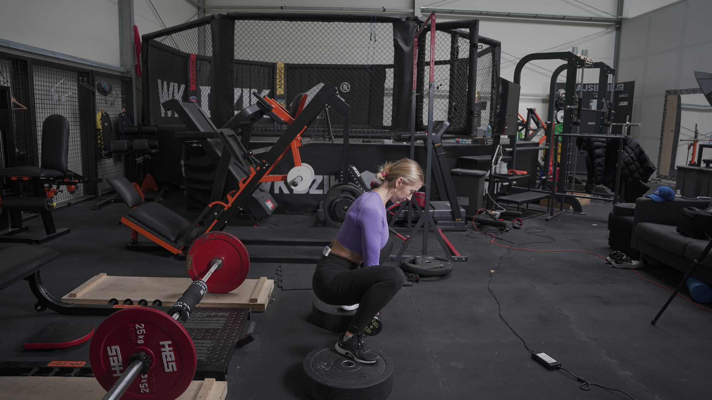
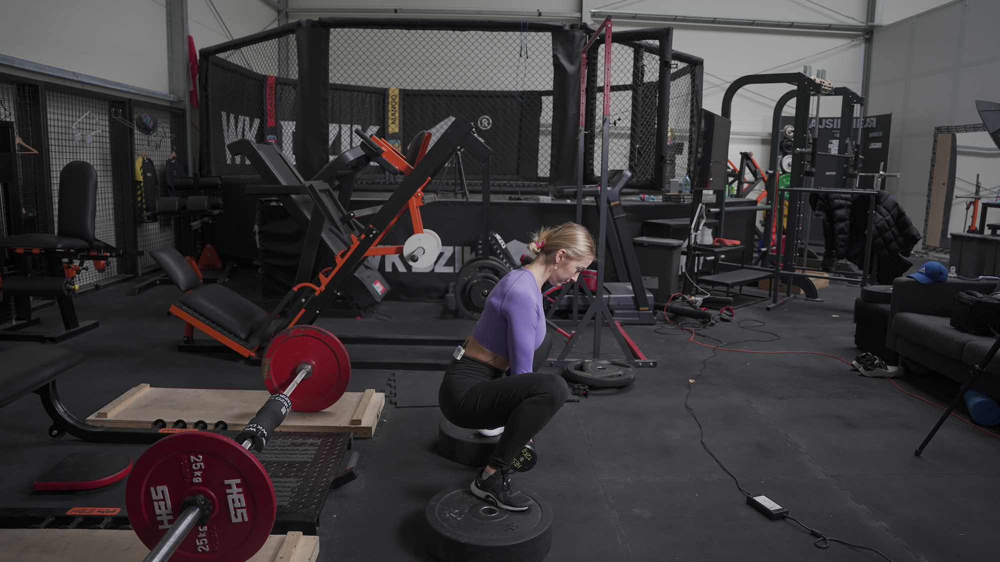

PRZYSIAD SUMO
 

1. Stań na podwyższeniach. Mogą to być stepy lub szerokie krążki.
2. Ustaw stopy dużo szerzej niż szerokość Twoich bioder, a palce skieruj mocno na zewnątrz (do pozycji sumo)
3. Ściągnij łopatki do siebie i obniż ich pozycje. Zepnij brzuch oraz pośladki.
4. Głowa powinna stanowić przedłużenie tułowia.
5. Rozpocznij ruch schodzenia w dół zaczynając od delikatnego wypchnięcia bioder.
6. Kolana kieruj na zewnątrz przez cały ruch.
7. Zejdź tak nisko, jak pozwala Ci Twoja mobilność. Zadbaj o to, aby miednica nie podwijała się za mocno (delikatne podwijanie jest akceptowane).
8. W górnej fazie dopnij pośladki, ale nie wykonuj przeprostu w odcinku lędźwiowym kręgosłupa.